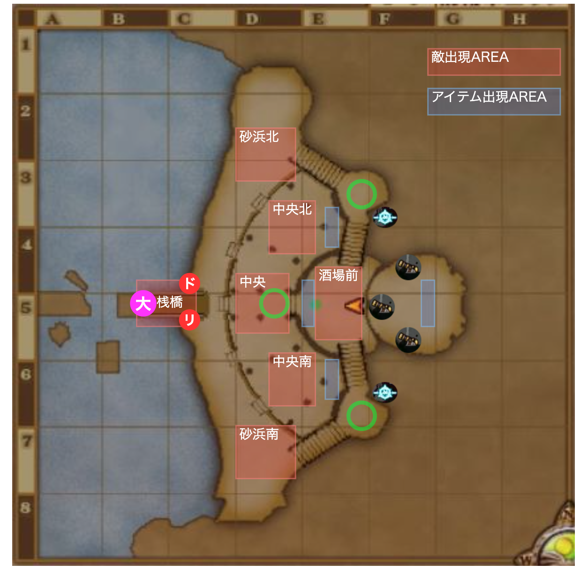

芳墨の華烈兵団
ボス:芳墨の堕天将フィア
- 怪人系
- HP:約100万
必要耐性
- 呪文，混乱，呪い，幻惑(堕天香を避けれるなら呪文だけでもいい)
- あとは火力もりもり. 戦神のベルト,断罪の指輪,ラストチョーカー,幻界王の首飾りあってもいい．
適職
- いつも通りバトマス,魔戦，魔法使いが強い．旅芸人も
- キラポン強い，魔法戦士は弓ポンしよう．
- 回復も重要,僧侶とか
アイテム湧き場所↓↓
- 3:25 東高台広場にしびれ砲弾3つ
- 中ボスリランザが猛攻落とす
- 中ボスろうごくドーターが堅守の書を落とす
行動表
| 残り時間 | 場所 | イベント/行動 アイテム係 大砲係 |
|---|---|---|
| 7:55 開幕 | 結界前 |
|
| 7:40 | 中央北 or 南 |
|
| 7:30 | 酒場前広場側 北 |
|
| 6:35 | 酒場前 広場 |
|
| 6:30 | 砂浜北or南 |
|
| 6:20 | 酒場前北と南 |
|
| 5:45 | 酒場前 |
|
| 5:30 | 酒場前 |
|
| 5:25 | 砲台付近 |
|
| 5:25 | 桟橋~酒場前 砂浜南or北 |
|
| 5:05 | 高台広場 |
|
| 4:50 | 砂浜北or南 |
|
| 4:40 | 砂浜北or南 |
・コアクモーンは1匹目が階段を登り切った時 ・ヒットデビルは1匹目がサークルの枠に触れた時 |
| 4:30 | 酒場前北南 |
|
| 4:00 | 砂浜北or南 |
|
| 3:45 | 高台広場 |
|
| 3:30 | 酒場前 |
|
| 3:25,3:20 | 砂浜北or南 |
|
| 3:00 | 砂浜北or南 |
|
| 2:50 | 酒場前 |
|
| 2:40 | 酒場前 階段南 |
|
| 2:30 | 酒場前 北 |
|
| 2:15 | 酒場前→結界北or南 |
|
| 2:00 | 酒場前 |
|
| 1:50 | 階段北 or 南 |
|
| 1:30 | 砂浜北 or 南 |
|
| 1:20 | 酒場前 |
|
| 1:00 | 酒場前 |
|
| 0:50 | 砂浜北 or 南 |
|